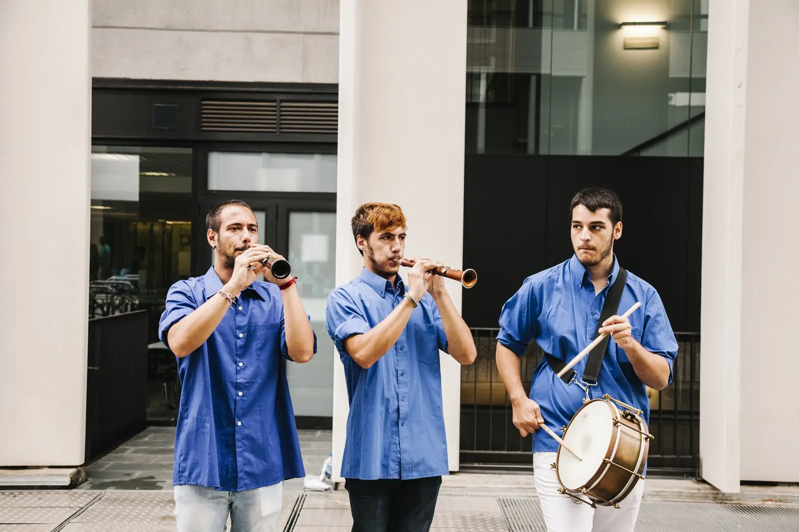
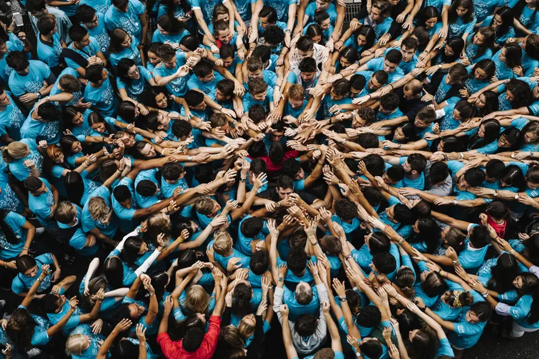
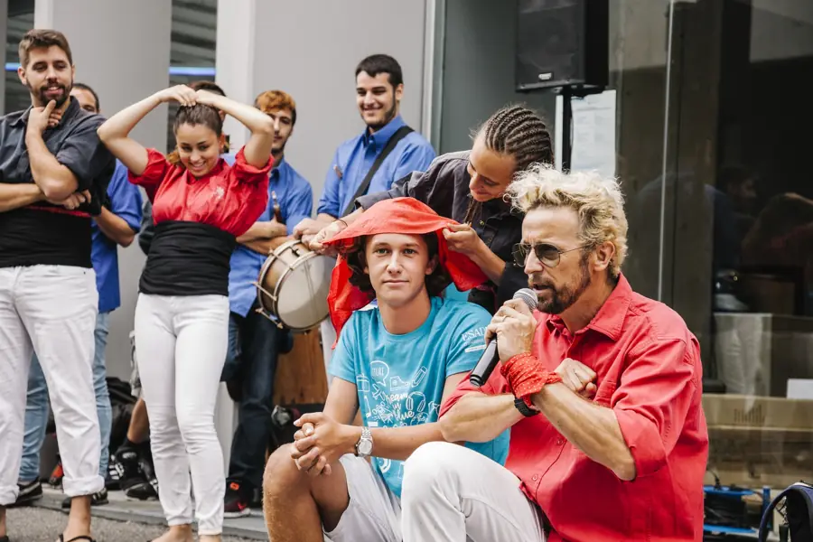

The original Castellers team building workshop for companies, created by Teamtowers. Over 20 years applying the "Metanoia" of Human Towers to align teams and build an unbreakable company culture.
El taller de castellers original para empresas, creado por Teamtowers. Más de 20 años aplicando la "Metanoia" de los castells para alinear equipos y construir una cultura empresarial inquebrantable.
Fent Pinya is the original Castellers (Human Towers) team building workshop, created by Teamtowers. For more than 20 years it has turned groups of 10 to 1,000 people into an authentic colla castellera in less than two hours, so teams experience shared leadership, trust and real-time communication first-hand.
Fent Pinya es el taller de castellers original para empresas, creado por Teamtowers. Desde hace más de 20 años convierte a grupos de 10 a 1.000 personas en una auténtica colla castellera en menos de dos horas, para que los equipos vivan en primera persona el liderazgo compartido, la confianza y la comunicación en tiempo real.
The name comes from the Catalan expression fer pinya: the pinya is the human base that holds up the tower, and "making pinya" means joining forces towards a common goal. Castells are recognised by UNESCO as Intangible Cultural Heritage of Humanity.
El nombre viene de la expresión catalana fer pinya: la pinya es la base humana que sostiene el castell, y «hacer piña» significa unir fuerzas hacia un objetivo común. Los castells son Patrimonio Cultural Inmaterial de la Humanidad de la UNESCO.
Our flagship Outdoor Training converts groups of 10 to 1,000 people into an authentic colla castellera in less than 2 hours. We guarantee absolute safety while delivering an unmatched emotional impact.
Nuestro Outdoor Training estrella convierte grupos de 10 a 1.000 personas en una auténtica colla castellera en menos de 2 horas. Garantizamos seguridad absoluta mientras entregamos un impacto emocional inigualable.

The values we promote are not theoretical; they translate into tangible results, generating a 30-50% measurable improvement in team cohesion post-event.
Los valores que impulsamos no son teóricos; se traducen en resultados tangibles, generando una mejora medible del 30-50% en la cohesión de equipo post-evento.
Fosters horizontal collaboration.
Fomenta la colaboración horizontal.
Synchronizing efforts in real-time.
Sincroniza esfuerzos en tiempo real.
Every participant feels essential.
Cada participante se siente esencial.
Builds indestructible bonds.
Construye lazos indestructibles.
Values diversity for collective strength.
Valora la diversidad para crear fuerza.
Clear structures for maximum efficiency.
Estructuras claras para eficiencia máxima.
Focuses minds on common goals.
Enfoca mentes en metas comunes.
Together, the impossible is achieved.
Juntos se logra lo imposible.
The essence of all business success.
La esencia de todo éxito empresarial.
Clarity that accelerates ROI.
Claridad que acelera el ROI.
For events where you are looking for a passive "wow factor", hire our professional demos. Your clients will be left open-mouthed with spectacular towers of up to 7 levels.
Para eventos donde buscas un "wow factor" pasivo, contrata nuestras demos profesionales. Tus clientes quedarán boquiabiertos con espectaculares torres de hasta 7 pisos.
Convert participants into ambassadors and extend the post-event impact with premium souvenirs. We can personalize items with your agency or client's logo for lasting branding.
Convierte a los participantes en embajadores y extiende el impacto post-evento con souvenirs premium. Personalizamos los artículos con el logo de tu agencia o cliente.
Event agencies and DMCs that partner with us have seen a 40% increase in client retention post-Teamtowers.
Las agencias de eventos y DMCs que se asocian con nosotros han experimentado un aumento del 40% en la retención de clientes tras nuestros eventos.

A proven structure designed for maximum engagement, seamlessly adaptable to your corporate themes.
Una estructura probada y diseñada para lograr el máximo engagement, adaptable a tus temas corporativos.
Distribution of premium kits (traditional sashes) for immediate cultural and physical immersion.
Distribución del kit premium (fajas tradicionales) para una inmersión cultural y física inmediata.
Dynamic explanation of roles and structural techniques. We empower leaders in minutes.
Explicación dinámica de roles y técnicas estructurales. Capacitamos a los líderes en minutos.
Hands-on training to create a solid base. This is where communication unites the team inextricably.
Entrenamiento práctico para crear bases sólidas. Aquí es donde la comunicación une al equipo inextricablemente.
Learning the key skills for a stable trunk: balancing speed with pinpoint precision.
Aprendizaje de habilidades clave para troncos estables: balanceando velocidad con máxima precisión.
Putting balance and absolute commitment into action as the tower rises.
Poniendo el equilibrio y el compromiso absoluto en acción a medida que la torre se eleva.
The triumphant moment where mutual trust crowns the collective achievement.
El momento triunfal donde la confianza mutua corona el logro colectivo.
Shared euphoria. The most viral and emotionally resonant moment of the event.
Euforia compartida. El momento más viral y con mayor resonancia emocional del evento.
Capturing the triumph for internal networks, social media, and lasting memories.
Captura del triunfo para redes internas, redes sociales y recuerdos duraderos.
Fent Pinya, by Teamtowers. We have been applying the Casteller model to team development for more than 20 years and have worked with over 150 organisations such as IKEA, Novartis, Vodafone, La Caixa, IESE and ESADE.
Fent Pinya, de Teamtowers. Llevamos más de 20 años aplicando el modelo casteller al desarrollo de equipos y hemos trabajado con más de 150 organizaciones como IKEA, Novartis, Vodafone, La Caixa, IESE o ESADE.
It is a Catalan expression that comes from castells: the pinya is the base of people holding up the human tower. It means joining forces and supporting each other to reach a common goal.
Es una expresión catalana que viene de los castells: la pinya es la base de personas que sostiene la torre humana. Significa unir fuerzas y apoyarse mutuamente para lograr un objetivo común.
Absolutely. This is a certified low-risk activity. We provide all safety equipment (traditional supportive sashes), comprehensive liability insurance, and the entire process is meticulously supervised by our expert monitors.
Absolutamente. Es una actividad certificada de bajo riesgo. Proporcionamos todo el equipo de seguridad (fajas de soporte), seguro de responsabilidad civil, y todo el proceso está minuciosamente supervisado por monitores expertos.
Our methodology is infinitely scalable. We run highly effective workshops for executive teams of 10 people, all the way up to massive corporate conventions of 1,000 participants simultaneously.
Nuestra metodología es totalmente escalable. Realizamos talleres altamente efectivos para comités de dirección de 10 personas, hasta convenciones corporativas masivas de 1.000 participantes simultáneamente.
Logistics are seamless. We only need a clear, flat space of approximately 10x10 meters with a minimum ceiling height of 5 meters. We frequently host this on beaches, hotel ballrooms, gardens, and even cruise ships.
La logística es sencilla. Solo necesitamos un espacio diáfano de unos 10x10 metros con una altura mínima de 5 metros. Lo realizamos frecuentemente en playas, salones de hoteles, jardines e incluso cruceros.
Yes! "All humans welcome." The beauty of the Casteller model is complementarity. You don't need to be strong or athletic to be vital. The base (the Pinya) requires everyone's weight and support to guarantee the tower's safety.
¡Sí! Todos son bienvenidos. La belleza del modelo Casteller es la complementariedad. No necesitas ser fuerte ni atlético para ser vital. La base (la Pinya) requiere el peso y el soporte de todos para garantizar la seguridad de la torre.
Our team dynamically facilitates the workshop in English, Spanish, Catalan, German, and French, making it the perfect choice for international companies and DMCs.
Nuestro equipo dinamiza el taller en Inglés, Castellano, Catalán, Alemán y Francés, haciéndolo la opción perfecta para empresas internacionales y agencias DMC.
From global tech giants to the most prestigious institutions.
Desde gigantes tecnológicos globales hasta las instituciones más prestigiosas.